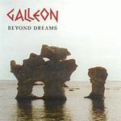

| Artist: | Galleon |
| Title: | Beyond Dreams |
| Label: | Progress Records PRCD006 |
| Length(s): | minutes |
| Year(s) of release: | 2000 |
| Month of review: | [01/2003] |
| 1) | Before The Sunrise | 9.09 |
| 2) | Let Us Be Amazed | 8.58 |
| 3) | The Ballad Of Fortune | 7.55 |
| 4) | The Dream | 3.09 |
| 5) | Dreamland | 8.19 |
| 6) | Parasite | 8.07 |
| 7) | Sailing On By | 6.25 |
On Let Us Be Amazed the band moves into a totally different direction. The claustrophobic opening lines on guitar harken back to the days of King Crimson. The keyboards are not any less frightening. The following combo of bluesy guitar and piano is then a big surprise. The vocal part is easy-going, the piano adds a nice tense undercurrent. Very nice. Then the music moves into another direction again: we get some Arabic tinged music, mainly keyboards, mellotron and some vocals. Afterwards, the King Crimson passage returns. The link now to the Arabic part is visible. Okay, time for some plodding Genesis type stuff, maybe the band ought to wind down a bit: take their time connecting all their juicy bits together, because it strikes me that a song contains so many wildly diverse elements that the naturalness of the song is far to be seen. This does not mean that I am not enjoying myself, mind you. Notice for instance, the quick piano runs before we wind down again for a harpsichord, in which a certain sadness and steadfastness shines through. The melodies are good throughout.
The Ballad Of Fortune is a waltzy tune, a bit lighter and accessible than the previous two songs. The eighties keyboards here are a bit too overly present on this one in my opinion. Certainly not a favourite of mine. Even the mellotrons won't help there. Strangely enough, there is something of the Flower Kings and Genesis in here. The vocals are typically ballad like (in the original sense).
The Dream is a relatively short track with foreboding keyboards and mechanized sounds. Very much like soundtrack music this one, wedged in between three progressive tracks on each side. A lone guitar sets in towards the end. Well done.
Dreamland opens optimistically with quick runs on piano, and in typical neo-progressive style. Plenty of repetition in the opening here. The dancing piano returns later on, after a rather straightforward vocal part (with a memorable vocal melody). The vocal style is often rather spoken like, comparable in a way to the singer of The Blue Nile. Past halfway the break comes in unnaturally (or is it only expectedly). The drummer is rather active on the cymbals on this one. Some Genesis like runs (Lamb era and earlier) can be spotted, this is a very typical prog solo. The keyboards are now more string like, the vocals up the ante a bit and we close with the memorable vocal part.
With Parasite the rock creeps back in, it had been gone for a while. Plodding riffs and drums open, this song is very much in the Rush vein: urgent and on the hard side of prop rock. The keyboards are more in the vein of Mark Kelly though. An Arabic melody is worked into the middle intermezzo. Here the loudness of the music is strong: soloing keyboard and drums hammering away. The alternating breaks into something more quiet work well here. The song ends on a mellow note.
Sailing On By opens with a bouncy drum and turns out to be an off-beat melodic mellow track. The song is mainly centered on the accessible vocal parts. The song breaks into something more atmospheric slightly past halfway.